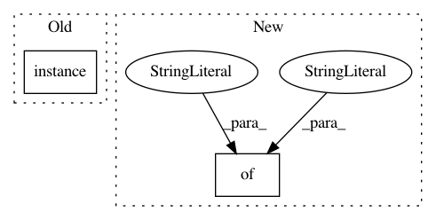

aaf10ddbba8387be41e6c11fd12e8fa0af7e1cf8,nilmtk/disaggregate/combinatorial_optimisation.py,CombinatorialOptimisation,disaggregate,#CombinatorialOptimisation#Any#Any#,55
Before Change
building_path = "/building{}".format(mains.building())
mains_data_location = ("{}/elec/meter{}"
.format(building_path,
container_to_string(mains.instance())))
for chunk in mains.power_series(**load_kwargs):
After Change
appliances = []
for i, model in enumerate(self.model):
for app in model["training_metadata"].appliances:
appliance = {
"meters": [i+2],
"type": app.identifier.type,
"instance": app.identifier.instance
// TODO this `instance` will only be correct when the
// model is trained on the same house as it is tested on
}
appliances.append(appliance)
building_metadata = {
"instance": mains.building(),
In pattern: SUPERPATTERN
Frequency: 3
Non-data size: 2
Instances
Project Name: nilmtk/nilmtk
Commit Name: aaf10ddbba8387be41e6c11fd12e8fa0af7e1cf8
Time: 2014-11-05
Author: jack-list@xlk.org.uk
File Name: nilmtk/disaggregate/combinatorial_optimisation.py
Class Name: CombinatorialOptimisation
Method Name: disaggregate
Project Name: nilmtk/nilmtk
Commit Name: aaf10ddbba8387be41e6c11fd12e8fa0af7e1cf8
Time: 2014-11-05
Author: jack-list@xlk.org.uk
File Name: nilmtk/disaggregate/combinatorial_optimisation.py
Class Name: CombinatorialOptimisation
Method Name: train
Project Name: nilmtk/nilmtk
Commit Name: 1305be0d02296ddbf12a67b9ba4b542587e285de
Time: 2014-11-16
Author: jack-list@xlk.org.uk
File Name: nilmtk/disaggregate/combinatorial_optimisation.py
Class Name: CombinatorialOptimisation
Method Name: disaggregate